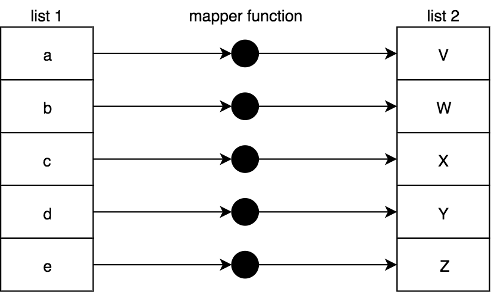

Functional-Light JavaScript
Chapter 9: List Operations
If you can do something awesome, keep doing it repeatedly.
We've already seen several brief references earlier in the text to some
utilities that we now want to take a very close look at, namely map(..),
filter(..), and reduce(..). In JavaScript, these utilities are typically
used as methods on the array (aka, "list") prototype, so we would naturally
refer to them as array or list operations.
Before we talk about the specific array methods, we want to examine conceptually what these operations are used for. It's equally important in this chapter that you understand why list operations are important as it is to understand how list operations work. Make sure you approach this chapter with that detail in mind.
The vast majority of common illustrations of these operations, both outside of this book and here in this chapter, depict trivial tasks performed on lists of values (like doubling each number in an array); it's a cheap and easy way to get the point across.
But don't just gloss over these simple examples and miss the deeper point. Some of the most important FP value in understanding list operations comes from being able to model a sequence of tasks -- a series of statements that wouldn't otherwise look like a list -- as a list operation instead of performing them individually.
This isn't just a trick to write more terse code. What we're after is to move from imperative to declarative style, to make the code patterns more readily recognizable and thus more readable.
But there's something even more important to grasp. With imperative code, each intermediate result in a set of calculations is stored in variable(s) through assignment. The more of these imperative patterns your code relies on, the harder it is to verify that there aren't mistakes -- in the logic, accidental mutation of values, or hidden side causes/effects lurking.
By chaining and/or composing list operations together, the intermediate results are tracked implicitly and largely protected from these hazards.
Note: More than previous chapters, to keep the many following code snippets
as brief as possible, we'll rely heavily on the ES6 => form. However, my
advice on => from Chapter 2 still
applies for general coding.
Non-FP List Processing
As a quick preamble to our discussion in this chapter, I want to call out a few operations which may seem related to JavaScript arrays and FP list operations, but which aren't. These operations will not be covered here, because they are not consistent with general FP best practices:
forEach(..)some(..)every(..)
forEach(..) is an iteration helper, but it's designed for each function call
to operate with side effects; you can probably guess why that's not an endorsed
FP list operation for our discussion!
some(..) and every(..) do encourage the use of pure functions (specifically,
predicate functions like filter(..) expects), but they inevitably reduce a
list to a true/false result, essentially like a search or matching. These
two utilities don't really fit the mold of how we want to model our code with
FP, so we're going to skip covering them here.
Map
We'll start our exploration of FP list operations with one of the most basic and
fundamental: map(..).
A mapping is a transformation from one value to another value. For example, if
you start with the number 2 and you multiply it by 3, you have mapped it to
6. It's important to note that we're not talking about mapping transformation
as implying in-place mutation or reassignment; instead, we're looking at how
mapping transformation projects a new value from one location to the other.
In other words:
var x = 2,
y;
// transformation / projection
y = x * 3;
// mutation / reassignment
x = x * 3;
If we define a function for this multiplying by 3, that function acts as a
mapping (transformer) function:
var multipleBy3 = v => v * 3;
var x = 2,
y;
// transformation / projection
y = multiplyBy3(x);
We can naturally extend mapping from a single value transformation to a
collection of values. map(..) is an operation that transforms all the values
of a list as it projects them to a new list:

To implement map(..):
function map(mapperFn, arr) {
var newList = [];
for (let [idx, v] of arr.entries()) {
newList.push(mapperFn(v, idx, arr));
}
return newList;
}
Note: The parameter order mapperFn, arr may feel backwards at first, but
this convention is much more common in FP libraries because it makes these
utilities easier to compose (with currying).
The mapperFn(..) is naturally passed the list item to map/transform, but also
an idx and arr. We're doing that to keep consistency with the built-in array
map(..). These extra pieces of information can be very useful in some cases.
But in other cases, you may want to use a mapperFn(..) that only the list item
should be passed to, because the extra arguments might change its behavior. In
Chapter 3, "All For One", we introduced
unary(..), which limits a function to only accept a single argument (no matter
how many are passed).
Recall the example from Chapter 3 about
limiting parseInt(..) to a single argument to be used safely as a
mapperFn(..), which we can also utilize with the standalone map(..):
map(["1", "2", "3"], unary(parseInt));
// [1,2,3]
Note: The JavaScript array prototype operations (map(..), filter(..),
and reduce(..)) all accept an optional last argument to use for this binding
of the function. As we discussed in
Chapter 2, "What's This?", this-based coding
should generally be avoided wherever possible in terms of being consistent with
the best practices of FP. As such, our example implementations in this chapter
do not support such a this-binding feature.
Beyond the obvious numeric or string operations you could perform against a list
of those respective value types, here are some other examples of mapping
operations. We can use map(..) to transform a list of functions into a list of
their return values:
var one = () => 1;
var two = () => 2;
var three = () => 3;
[one, two, three].map(fn => fn());
// [1,2,3]
Or we can first transform a list of functions by composing each of them with another function, and then execute them:
var increment = v => ++v;
var decrement = v => --v;
var square = v => v * v;
var double = v => v * 2;
[increment, decrement, square].map(fn => compose(fn, double)).map(fn => fn(3));
// [7,5,36]
Something interesting to observe about map(..): we typically would assume that
the list is processed left-to-right, but there's nothing about the concept of
map(..) that really requires that. Each transformation is supposed to be
independent of every other transformation.
Mapping in a general sense could even been parallelized in an environment that
supports that, which for a large list could drastically improve performance. We
don't see JavaScript actually doing that because there's nothing that requires
you to pass a pure function as mapperFn(..), even though you really ought
to. If you were to pass an impure function and JS were to run different calls
in different orders, it would quickly cause havoc.
Even though theoretically, individual mapping operations are independent, JS has to assume that they're not. That's a bummer.
Sync vs. Async
The list operations we're discussing in this chapter all operate synchronously
on a list of values that are all already present; map(..) as conceived here is
an eager operation. But another way of thinking about the mapper function is as
an event handler which is invoked for each new value encountered in the list.
Imagine something fictional like this:
var newArr = arr.map();
arr.addEventListener("value", multiplyBy3);
Now, any time a value is added to arr, the multiplyBy3(..) event handler --
mapper function -- is called with the value, and its transformation is added to
newArr.
What we're hinting at is that arrays, and the array operations we perform on them, are the eager synchronous versions, whereas these same operations can also be modeled on a "lazy list" (aka, stream) that receives its values over time. We'll dive into this topic in Chapter 10.
Mapping vs. Eaching
Some advocate using map(..) as a general form of forEach(..)-iteration,
where essentially the value received is passed through untouched, but then some
side effect can be performed:
[1,2,3,4,5]
.map( function mapperFn(v){
console.log( v ); // side effect!
return v;
} )
..
The reason this technique can seem useful is that the map(..) returns the
array so you can keep chaining more operations after it; the return value of
forEach(..) is undefined. However, I think you should avoid using map(..)
in this way, because it's a net confusion to use a core FP operation in a
decidedly un-FP way.
You've heard the old adage about using the right tool for the right job, right? Hammer for a nail, screwdriver for a screw... This is slightly different: it's use the right tool in the right way.
A hammer is meant to be held in your hand; if you instead hold it in your mouth
and try to hammer the nail, you're not gonna be very effective. map(..) is
intended to map values, not create side effects.
A Word: Functors
We've mostly tried to stay away from invented terminology in FP as much as possible in this book. We have used official terms at times, but mostly when we can derive some sense of meaning from them in regular everyday conversation.
I'm going to very briefly break that pattern and use a word that might be a little intimidating: functor. The reason I want to talk about functors here is because we now already understand what they do, and because that term is used heavily throughout the rest of FP literature; indeed, functors are foundational ideas in FP that come straight from the mathematical principles (category theory). You being at least familiar with and not scared by this term will be beneficial.
A functor is a value that has a utility for using an operator function on that value, which preserves composition.
If the value in question is compound, meaning it's comprised of individual values -- as is the case with arrays, for example! -- a functor uses the operator function on each individual value. Moreover, the functor utility creates a new compound value holding the results of all the individual operator function calls.
This is all a fancy way of describing what we just looked at with map(..). The
map(..) function takes its associated value (an array) and a mapping function
(the operator function), and executes the mapping function for each individual
value in the array. Finally, it returns a new array with all the newly mapped
values in it.
Another example: a string functor would be a string plus a utility that executes some operator function across all the characters in the string, returning a new string with the processed letters. Consider this highly contrived example:
function uppercaseLetter(c) {
var code = c.charCodeAt(0);
// lowercase letter?
if (code >= 97 && code <= 122) {
// uppercase it!
code = code - 32;
}
return String.fromCharCode(code);
}
function stringMap(mapperFn, str) {
return [...str].map(mapperFn).join("");
}
stringMap(uppercaseLetter, "Hello World!");
// HELLO WORLD!
stringMap(..) allows a string to be a functor. You can define a mapping
function for any data structure; as long as the utility follows these rules, the
data structure is a functor.
Filter
Imagine I bring an empty basket with me to the grocery store to visit the fruit section; there's a big display of fruit (apples, oranges, and bananas). I'm really hungry so I want to get as much fruit as they have available, but I really only prefer the round fruits (apples and oranges). So I sift through each fruit one by one, and I walk away with a basket full of just the apples and oranges.
Let's say we call this process filtering. Would you more naturally describe my shopping as starting with an empty basket and filtering in (selecting, including) only the apples and oranges, or starting with the full display of fruits and filtering out (skipping, excluding) the bananas as my basket is filled with fruit?
If you cook spaghetti in a pot of water, and then pour it into a strainer (aka filter) over the sink, are you filtering in the spaghetti or filtering out the water? If you put coffee grounds into a filter and make a cup of coffee, did you filter in the coffee into your cup, or filter out the coffee grounds?
Does your view of filtering depend on whether the stuff you want is "kept" in the filter or passes through the filter?
What about on airline/hotel websites, when you specify options to "filter your results"? Are you filtering in the results that match your criteria, or are you filtering out everything that doesn't match? Think carefully: this example might have a different semantic than the previous ones.
Filtering Confusion
Depending on your perspective, filtering is either exclusionary or inclusionary. This conceptual conflation is unfortunate.
I think the most common interpretation of filtering -- outside of programming, anyway -- is that you filter out unwanted stuff. Unfortunately, in programming, we have essentially flipped this semantic to be more like filtering in wanted stuff.
The filter(..) list operation takes a function to decide if each value in the
original array should be in the new array or not. This function needs to return
true if a value should make it, and false if it should be skipped. A
function that returns true/false for this kind of decision making goes by
the special name: predicate function.
If you think of true as indicating a positive signal, the definition of
filter(..) is that you are saying "keep" (to filter in) a value rather than
saying "discard" (to filter out) a value.
To use filter(..) as an exclusionary action, you have to twist your brain to
think of positively signaling an exclusion by returning false, and passively
letting a value pass through by returning true.
The reason this semantic mismatch matters is because of how you will likely name
the function used as predicateFn(..), and what that means for the readability
of code. We'll come back to this point shortly.
Here's how to visualize a filter(..) operation across a list of values:

To implement filter(..):
function filter(predicateFn, arr) {
var newList = [];
for (let [idx, v] of arr.entries()) {
if (predicateFn(v, idx, arr)) {
newList.push(v);
}
}
return newList;
}
Notice that just like mapperFn(..) before, predicateFn(..) is passed not
only the value but also the idx and arr. Use unary(..) to limit its
arguments as necessary.
Just as with map(..), filter(..) is provided as a built-in utility on JS
arrays.
Let's consider a predicate function like this:
var whatToCallIt = v => v % 2 == 1;
This function uses v % 2 == 1 to return true or false. The effect here is
that an odd number will return true, and an even number will return false.
So, what should we call this function? A natural name might be:
var isOdd = v => v % 2 == 1;
Consider how you might use isOdd(..) with a simple value check somewhere in
your code:
var midIdx;
if (isOdd(list.length)) {
midIdx = (list.length + 1) / 2;
} else {
midIdx = list.length / 2;
}
Makes sense, right? But, let's consider using it with the built-in array
filter(..) to filter a list of values:
[1, 2, 3, 4, 5].filter(isOdd);
// [1,3,5]
If you described the [1,3,5] result, would you say, "I filtered out the even
numbers", or would you say "I filtered in the odd numbers"? I think the former
is a more natural way of describing it. But the code reads the opposite. The
code reads, almost literally, that we "filtered (in) each number that is odd".
I personally find this semantic confusing. There's no question there's plenty of precedent for experienced developers. But if you just start with a fresh slate, this expression of the logic seems kinda like not speaking without a double negative -- aka, speaking with a double negative.
We could make this easier by renaming isOdd(..) to isEven(..):
var isEven = v => v % 2 == 1;
[1, 2, 3, 4, 5].filter(isEven);
// [1,3,5]
Yay! But that function makes no sense with its name, in that it returns false
when it's even:
isEven(2); // false
Yuck.
Recall that in Chapter 3, "No Points", we defined a
not(..) operator that negates a predicate function. Consider:
var isEven = not(isOdd);
isEven(2); // true
But we can't use this isEven(..) with filter(..) the way it's currently
defined, because our logic will be reversed; we'll end up with evens, not odds.
We'd need to do:
[1, 2, 3, 4, 5].filter(not(isEven));
// [1,3,5]
That defeats the whole purpose, though, so let's not do that. We're just going in circles.
Filtering-Out & Filtering-In
To clear up all this confusion, let's define a filterOut(..) that actually
filters out values by internally negating the predicate check. While we're
at it, we'll alias filterIn(..) to the existing filter(..):
var filterIn = filter;
function filterOut(predicateFn, arr) {
return filterIn(not(predicateFn), arr);
}
Now we can use whichever filtering makes most sense at any point in our code:
isOdd(3); // true
isEven(2); // true
filterIn(isOdd, [1, 2, 3, 4, 5]); // [1,3,5]
filterOut(isEven, [1, 2, 3, 4, 5]); // [1,3,5]
I think using filterIn(..) and filterOut(..) (known as reject(..) in
Ramda) will make your code a lot more readable than just using filter(..) and
leaving the semantics conflated and confusing for the reader.
Reduce
While map(..) and filter(..) produce new lists, typically this third
operator (reduce(..)) combines (aka "reduces") the values of a list down to a
single finite (non-list) value, like a number or string. However, later in this
chapter, we'll look at how you can push reduce(..) to use it in more advanced
ways. reduce(..) is one of the most important FP tools; it's like a Swiss Army
all-in-one knife with all its usefulness.
A combination/reduction is abstractly defined as taking two values and making them into one value. Some FP contexts refer to this as "folding", as if you're folding two values together into one value. That's a helpful visualization, I think.
Just like with mapping and filtering, the manner of the combination is entirely up to you, and generally dependent on the types of values in the list. For example, numbers will typically be combined through arithmetic, strings through concatenation, and functions through composition.
Sometimes a reduction will specify an initialValue and start its work by
combining it with the first value in the list, cascading down through each of
the rest of the values in the list. That looks like this:

Alternatively, you can omit the initialValue in which case the first value of
the list will act in place of the initialValue and the combining will start
with the second value in the list, like this:

Warning: In JavaScript, if there's not at least one value in the reduction
(either in the array or specified as initialValue), an error is thrown. Be
careful not to omit the initialValue if the list for the reduction could
possibly be empty under any circumstance.
The function you pass to reduce(..) to perform the reduction is typically
called a reducer. A reducer has a different signature from the mapper and
predicate functions we looked at earlier. Reducers primarily receive the current
reduction result as well as the next value to reduce it with. The current result
at each step of the reduction is often referred to as the accumulator.
For example, consider the steps involved in multiply-reducing the numbers 5,
10, and 15, with an initialValue of 3:
3*5=1515*10=150150*15=2250
Expressed in JavaScript using the built-in reduce(..) method on arrays:
[5, 10, 15].reduce((product, v) => product * v, 3);
// 2250
But a standalone implementation of reduce(..) might look like this:
function reduce(reducerFn, initialValue, arr) {
var acc, startIdx;
if (arguments.length == 3) {
acc = initialValue;
startIdx = 0;
} else if (arr.length > 0) {
acc = arr[0];
startIdx = 1;
} else {
throw new Error("Must provide at least one value.");
}
for (let idx = startIdx; idx < arr.length; idx++) {
acc = reducerFn(acc, arr[idx], idx, arr);
}
return acc;
}
Just as with map(..) and filter(..), the reducer function is also passed the
lesser-common idx and arr arguments in case that's useful to the reduction.
I would say I don't typically use these, but I guess it's nice to have them
available.
Recall in
Chapter 4, we discussed the compose(..) utility
and showed an implementation with reduce(..):
function compose(...fns) {
return function composed(result) {
return [...fns].reverse().reduce(function reducer(result, fn) {
return fn(result);
}, result);
};
}
To illustrate reduce(..)-based composition differently, consider a reducer
that will compose functions left-to-right (like pipe(..) does), to use in an
array chain:
var pipeReducer = (composedFn, fn) => pipe(composedFn, fn);
var fn = [3, 17, 6, 4].map(v => n => v * n).reduce(pipeReducer);
fn(9); // 11016 (9 * 3 * 17 * 6 * 4)
fn(10); // 12240 (10 * 3 * 17 * 6 * 4)
pipeReducer(..) is unfortunately not point-free (see
Chapter 3, "No Points"), but we can't just pass
pipe(..) as the reducer itself, because it's variadic; the extra arguments
(idx and arr) that reduce(..) passes to its reducer function would be
problematic.
Earlier we talked about using unary(..) to limit a mapperFn(..) or
predicateFn(..) to just a single argument. It might be handy to have a
binary(..) that does something similar but limits to two arguments, for a
reducerFn(..) function:
var binary = fn => (arg1, arg2) => fn(arg1, arg2);
Using binary(..), our previous example is a little cleaner:
var pipeReducer = binary(pipe);
var fn = [3, 17, 6, 4].map(v => n => v * n).reduce(pipeReducer);
fn(9); // 11016 (9 * 3 * 17 * 6 * 4)
fn(10); // 12240 (10 * 3 * 17 * 6 * 4)
Unlike map(..) and filter(..) whose order of passing through the array
wouldn't actually matter, reduce(..) definitely uses left-to-right processing.
If you want to reduce right-to-left, JavaScript provides a reduceRight(..),
with all other behaviors the same as reduce(..):
var hyphenate = (str, char) => `${str}-${char}`;
["a", "b", "c"].reduce(hyphenate);
// "a-b-c"
["a", "b", "c"].reduceRight(hyphenate);
// "c-b-a"
Where reduce(..) works left-to-right and thus acts naturally like pipe(..)
in composing functions, reduceRight(..)'s right-to-left ordering is natural
for performing a compose(..)-like operation. So, let's revisit
compose(..) from Chapter 4, but
implement it using reduceRight(..):
function compose(...fns) {
return function composed(result) {
return fns.reduceRight(function reducer(result, fn) {
return fn(result);
}, result);
};
}
Now, we don't need to do [...fns].reverse(); we just reduce from the other
direction!
Map as Reduce
The map(..) operation is iterative in its nature, so it can also be
represented as a reduction (reduce(..)). The trick is to realize that the
initialValue of reduce(..) can be itself an (empty) array, in which case the
result of a reduction can be another list!
var double = v => v * 2;
[1, 2, 3, 4, 5].map(double);
// [2,4,6,8,10]
[1, 2, 3, 4, 5].reduce((list, v) => (list.push(double(v)), list), []);
// [2,4,6,8,10]
Note: We're cheating with this reducer: using a side effect by allowing
list.push(..) to mutate the list that was passed in. In general, that's not a
good idea, obviously, but since we know the [] list is being created and
passed in, it's less dangerous. You could be more formal -- yet less performant!
-- by creating a new list with the val concat(..)d onto the end. We'll come
back to this cheat in Appendix A.
Implementing map(..) with reduce(..) is not on its surface an obvious step
or even an improvement. However, this ability will be a crucial recognition for
more advanced techniques like those we'll cover in Appendix A.
Filter as Reduce
Just as map(..) can be done with reduce(..), so can filter(..):
var isOdd = v => v % 2 == 1;
[1, 2, 3, 4, 5].filter(isOdd);
// [1,3,5]
[1, 2, 3, 4, 5].reduce(
(list, v) => (isOdd(v) ? list.push(v) : undefined, list),
[]
);
// [1,3,5]
Note: More impure reducer cheating here. Instead of list.push(..), we
could have done list.concat(..) and returned the new list. We'll come back to
this cheat in Appendix A.
Advanced List Operations
Now that we feel somewhat comfortable with the foundational list operations
map(..), filter(..), and reduce(..), let's look at a few
more-sophisticated operations you may find useful in various situations. These
are generally utilities you'll find in various FP libraries.
Unique
Filtering a list to include only unique values, based on indexOf(..) searching
(which uses === strict equality comparison):
var unique = arr => arr.filter((v, idx) => arr.indexOf(v) == idx);
This technique works by observing that we should only include the first
occurrence of an item from arr into the new list; when running left-to-right,
this will only be true if its idx position is the same as the indexOf(..)
found position.
Another way to implement unique(..) is to run through arr and include an
item into a new (initially empty) list if that item cannot already be found in
the new list. For that processing, we use reduce(..):
var unique = arr =>
arr.reduce(
(list, v) => (list.indexOf(v) == -1 ? (list.push(v), list) : list),
[]
);
Note: There are many other ways to implement this algorithm using more imperative approaches like loops, and many of them are likely "more efficient" performance-wise. However, the advantage of either of these presented approaches is that they use existing built-in list operations, which makes them easier to chain/compose alongside other list operations. We'll talk more about those concerns later in this chapter.
unique(..) nicely produces a new list with no duplicates:
unique([1, 4, 7, 1, 3, 1, 7, 9, 2, 6, 4, 0, 5, 3]);
// [1, 4, 7, 3, 9, 2, 6, 0, 5]
Flatten
From time to time, you may have (or produce through some other operations) an array that's not just a flat list of values -- for instance, it might include nested arrays, as shown here:
[[1, 2, 3], 4, 5, [6, [7, 8]]];
What if you'd like to transform it as follows?
[1, 2, 3, 4, 5, 6, 7, 8];
The operation we're looking for is typically called flatten(..), and it could
be implemented like this using our Swiss Army knife reduce(..):
var flatten = arr =>
arr.reduce((list, v) => list.concat(Array.isArray(v) ? flatten(v) : v), []);
Note: This implementation choice relies on recursion as we saw in Chapter 8.
To use flatten(..) with an array of arrays (of any nested depth):
flatten([[0, 1], 2, 3, [4, [5, 6, 7], [8, [9, [10, [11, 12], 13]]]]]);
// [0,1,2,3,4,5,6,7,8,9,10,11,12,13]
You might like to limit the recursive flattening to a certain depth. We can
handle this by adding an optional depth limit argument to the implementation:
var flatten = (arr, depth = Infinity) =>
arr.reduce(
(list, v) =>
list.concat(
depth > 0
? depth > 1 && Array.isArray(v)
? flatten(v, depth - 1)
: v
: [v]
),
[]
);
Illustrating the results with different flattening depths:
flatten([[0, 1], 2, 3, [4, [5, 6, 7], [8, [9, [10, [11, 12], 13]]]]], 0);
// [[0,1],2,3,[4,[5,6,7],[8,[9,[10,[11,12],13]]]]]
flatten([[0, 1], 2, 3, [4, [5, 6, 7], [8, [9, [10, [11, 12], 13]]]]], 1);
// [0,1,2,3,4,[5,6,7],[8,[9,[10,[11,12],13]]]]
flatten([[0, 1], 2, 3, [4, [5, 6, 7], [8, [9, [10, [11, 12], 13]]]]], 2);
// [0,1,2,3,4,5,6,7,8,[9,[10,[11,12],13]]]
flatten([[0, 1], 2, 3, [4, [5, 6, 7], [8, [9, [10, [11, 12], 13]]]]], 3);
// [0,1,2,3,4,5,6,7,8,9,[10,[11,12],13]]
flatten([[0, 1], 2, 3, [4, [5, 6, 7], [8, [9, [10, [11, 12], 13]]]]], 4);
// [0,1,2,3,4,5,6,7,8,9,10,[11,12],13]
flatten([[0, 1], 2, 3, [4, [5, 6, 7], [8, [9, [10, [11, 12], 13]]]]], 5);
// [0,1,2,3,4,5,6,7,8,9,10,11,12,13]
Mapping, Then Flattening
One of the most common usages of flatten(..) behavior is when you've mapped a
list of elements where each transformed value from the original list is now
itself a list of values. For example:
var firstNames = [
{ name: "Jonathan", variations: ["John", "Jon", "Jonny"] },
{ name: "Stephanie", variations: ["Steph", "Stephy"] },
{ name: "Frederick", variations: ["Fred", "Freddy"] }
];
firstNames.map(entry => [entry.name, ...entry.variations]);
// [ ["Jonathan","John","Jon","Jonny"], ["Stephanie","Steph","Stephy"],
// ["Frederick","Fred","Freddy"] ]
The return value is an array of arrays, which might be more awkward to work
with. If we want a single dimension list with all the names, we can then
flatten(..) that result:
flatten(firstNames.map(entry => [entry.name, ...entry.variations]));
// ["Jonathan","John","Jon","Jonny","Stephanie","Steph","Stephy",
// "Frederick","Fred","Freddy"]
Besides being slightly more verbose, the disadvantage of doing the map(..) and
flatten(..) as separate steps is primarily around performance; this approach
processes the list twice, and creates an intermediate list that's then thrown
away.
FP libraries typically define a flatMap(..) (often also called chain(..))
that does the mapping-then-flattening combined. For consistency and ease of
composition (via currying), the flatMap(..) (aka chain(..)) utility
typically matches the mapperFn, arr parameter order that we saw earlier with
the standalone map(..), filter(..), and reduce(..) utilities:
flatMap(entry => [entry.name, ...entry.variations], firstNames);
// ["Jonathan","John","Jon","Jonny","Stephanie","Steph","Stephy",
// "Frederick","Fred","Freddy"]
The naive implementation of flatMap(..) with both steps done separately:
var flatMap = (mapperFn, arr) => flatten(arr.map(mapperFn), 1);
Note: We use 1 for the flattening-depth because the typical definition of
flatMap(..) is that the flattening is shallow on just the first level.
Since this approach still processes the list twice resulting in worse
performance, we can combine the operations manually, using reduce(..):
var flatMap = (mapperFn, arr) =>
arr.reduce(
(list, v) =>
// note: concat(..) used here since it automatically
// flattens an array into the concatenation
list.concat(mapperFn(v)),
[]
);
While there's some convenience and performance gained with a flatMap(..)
utility, there may very well be times when you need other operations like
filter(..)ing mixed in. If that's the case, doing the map(..) and
flatten(..) separately might still be more appropriate.
Zip
So far, the list operations we've examined have operated on a single list. But
some cases will need to process multiple lists. One well-known operation
alternates selection of values from each of two input lists into sub-lists,
called zip(..):
zip([1, 3, 5, 7, 9], [2, 4, 6, 8, 10]);
// [ [1,2], [3,4], [5,6], [7,8], [9,10] ]
Values 1 and 2 were selected into the sub-list [1,2], then 3 and 4
into [3,4], and so on. The definition of zip(..) requires a value from each
of the two lists. If the two lists are of different lengths, the selection of
values will continue until the shorter list has been exhausted, with the extra
values in the other list ignored.
An implementation of zip(..):
function zip(arr1, arr2) {
var zipped = [];
arr1 = [...arr1];
arr2 = [...arr2];
while (arr1.length > 0 && arr2.length > 0) {
zipped.push([arr1.shift(), arr2.shift()]);
}
return zipped;
}
The [...arr1] and [...arr2] copies ensure zip(..) is pure by not causing
side effects on the received array references.
Note: There are some decidedly un-FP things going on in this implementation.
There's an imperative while-loop and mutations of lists with both shift()
and push(..). Earlier in the book, I asserted that it's reasonable for pure
functions to use impure behavior inside them (usually for performance), as long
as the effects are fully self-contained. This implementation is safely pure.
Merge
Merging two lists by interleaving values from each source looks like this:
mergeLists([1, 3, 5, 7, 9], [2, 4, 6, 8, 10]);
// [1,2,3,4,5,6,7,8,9,10]
It may not be obvious, but this result seems similar to what we get if we
compose flatten(..) and zip(..):
zip([1, 3, 5, 7, 9], [2, 4, 6, 8, 10]);
// [ [1,2], [3,4], [5,6], [7,8], [9,10] ]
flatten([
[1, 2],
[3, 4],
[5, 6],
[7, 8],
[9, 10]
]);
// [1,2,3,4,5,6,7,8,9,10]
// composed:
flatten(zip([1, 3, 5, 7, 9], [2, 4, 6, 8, 10]));
// [1,2,3,4,5,6,7,8,9,10]
However, recall that zip(..) only selects values until the shorter of two
lists is exhausted, ignoring the leftover values; merging two lists would most
naturally retain those extra values. Also, flatten(..) works recursively on
nested lists, but you might expect list-merging to only work shallowly, keeping
nested lists.
So, let's define a mergeLists(..) that works more like we'd expect:
function mergeLists(arr1, arr2) {
var merged = [];
arr1 = [...arr1];
arr2 = [...arr2];
while (arr1.length > 0 || arr2.length > 0) {
if (arr1.length > 0) {
merged.push(arr1.shift());
}
if (arr2.length > 0) {
merged.push(arr2.shift());
}
}
return merged;
}
Note: Various FP libraries don't define a mergeLists(..) but instead
define a merge(..) that merges properties of two objects; the results of such
a merge(..) will differ from our mergeLists(..).
Alternatively, here are a couple of options to implement the list merging as a reducer:
// via @rwaldron
var mergeReducer = (merged, v, idx) => (merged.splice(idx * 2, 0, v), merged);
// via @WebReflection
var mergeReducer = (merged, v, idx) =>
merged.slice(0, idx * 2).concat(v, merged.slice(idx * 2));
And using a mergeReducer(..):
[1, 3, 5, 7, 9].reduce(mergeReducer, [2, 4, 6, 8, 10]);
// [1,2,3,4,5,6,7,8,9,10]
Tip: We'll use the mergeReducer(..) trick later in the chapter.
Method vs. Standalone
A common source of frustration for FPers in JavaScript is unifying their strategy for working with utilities when some of them are provided as standalone functions (think about the various FP utilities we've derived in previous chapters) and others are methods of the array prototype (like the ones we've seen in this chapter).
The pain of this problem becomes more evident when you consider combining multiple operations:
[1, 2, 3, 4, 5]
.filter(isOdd)
.map(double)
.reduce(sum, 0); // 18
// vs.
reduce(map(filter([1, 2, 3, 4, 5], isOdd), double), sum, 0); // 18
Both API styles accomplish the same task, but they have very different ergonomics. Many FPers will prefer the latter to the former, but the former is unquestionably more common in JavaScript. One thing specifically that's disliked about the latter is the nesting of the calls. The preference for the method chain style -- typically called a fluent API style, as in jQuery and other tools -- is that it's compact/concise and it reads in declarative top-down order.
The visual order for that manual composition of the standalone style is neither strictly left-to-right (top-to-bottom) nor right-to-left (bottom-to-top); it's inner-to-outer, which harms the readability.
Automatic composition normalizes the reading order as right-to-left (bottom-to-top) for both styles. So, to explore the implications of the style differences, let's examine composition specifically; it seems like it should be straightforward, but it's a little awkward in both cases.
Composing Method Chains
The array methods receive the implicit this argument, so despite their
appearance, they can't be treated as unary; that makes composition more awkward.
To cope, we'll first need a this-aware version of partial(..):
var partialThis = (fn, ...presetArgs) =>
// intentionally `function` to allow `this`-binding
function partiallyApplied(...laterArgs) {
return fn.apply(this, [...presetArgs, ...laterArgs]);
};
We'll also need a version of compose(..) that calls each of the partially
applied methods in the context of the chain -- the input value it's being
"passed" (via implicit this) from the previous step:
var composeChainedMethods = (...fns) => result =>
fns.reduceRight((result, fn) => fn.call(result), result);
And using these two this-aware utilities together:
composeChainedMethods(
partialThis(Array.prototype.reduce, sum, 0),
partialThis(Array.prototype.map, double),
partialThis(Array.prototype.filter, isOdd)
)([1, 2, 3, 4, 5]); // 18
Note: The three Array.prototype.XXX-style references are grabbing
references to the built-in Array.prototype.* methods so that we can reuse them
with our own arrays.
Composing Standalone Utilities
Standalone compose(..)-style composition of these utilities doesn't need all
the this contortions, which is its most favorable argument. For example, we
could define standalones as:
var filter = (arr, predicateFn) => arr.filter(predicateFn);
var map = (arr, mapperFn) => arr.map(mapperFn);
var reduce = (arr, reducerFn, initialValue) =>
arr.reduce(reducerFn, initialValue);
But this particular standalone approach, with the arr as the first parameter,
suffers from its own awkwardness; the cascading array context is the first
argument rather than the last, so we have to use right-partial application to
compose them:
compose(
partialRight(reduce, sum, 0),
partialRight(map, double),
partialRight(filter, isOdd)
)([1, 2, 3, 4, 5]); // 18
That's why FP libraries typically define filter(..), map(..), and
reduce(..) to instead receive the array last, not first. They also typically
automatically curry the utilities:
var filter = curry((predicateFn, arr) => arr.filter(predicateFn));
var map = curry((mapperFn, arr) => arr.map(mapperFn));
var reduce = curry((reducerFn, initialValue, arr) =>
arr.reduce(reducerFn, initialValue)
);
Working with the utilities defined in this way, the composition flow is a bit nicer:
compose(reduce(sum)(0), map(double), filter(isOdd))([1, 2, 3, 4, 5]); // 18
The cleanliness of this approach is in part why FPers prefer the standalone utility style instead of instance methods. But your mileage may vary.
Adapting Methods to Standalones
In the previous definition of filter(..)/map(..)/reduce(..), you might
have spotted the common pattern across all three: they all dispatch to the
corresponding native array method. So, can we generate these standalone
adaptations with a utility? Yes! Let's make a utility called unboundMethod(..)
to do just that:
var unboundMethod = (methodName, argCount = 2) =>
curry((...args) => {
var obj = args.pop();
return obj[methodName](...args);
}, argCount);
And to use this utility:
var filter = unboundMethod("filter", 2);
var map = unboundMethod("map", 2);
var reduce = unboundMethod("reduce", 3);
compose(reduce(sum)(0), map(double), filter(isOdd))([1, 2, 3, 4, 5]); // 18
Note: unboundMethod(..) is called invoker(..) in Ramda.
Adapting Standalones to Methods
If you prefer to work with only array methods (fluent chain style), you have two choices. You can:
- Extend the built-in
Array.prototypewith additional methods. - Adapt a standalone utility to work as a reducer function and pass it to the
reduce(..)instance method.
Don't do (1). It's never a good idea to extend built-in natives like
Array.prototype -- unless you define a subclass of Array, but that's beyond
our discussion scope here. In an effort to discourage bad practices, we won't go
any further into this approach.
Let's focus on (2) instead. To illustrate this point, we'll convert the
recursive flatten(..) standalone utility from earlier:
var flatten = arr =>
arr.reduce(
(list, v) =>
// note: concat(..) used here since it automatically
// flattens an array into the concatenation
list.concat(Array.isArray(v) ? flatten(v) : v),
[]
);
Let's pull out the inner reducer(..) function as the standalone utility (and
adapt it to work without the outer flatten(..)):
// intentionally a function to allow recursion by name
function flattenReducer(list, v) {
// note: concat(..) used here since it automatically
// flattens an array into the concatenation
return list.concat(Array.isArray(v) ? v.reduce(flattenReducer, []) : v);
}
Now, we can use this utility in an array method chain via reduce(..):
[[1, 2, 3], 4, 5, [6, [7, 8]]].reduce(flattenReducer, []);
// ..
Looking for Lists
So far, most of the examples have been rather trivial, based on simple lists of numbers or strings. Let's now talk about where list operations can start to shine: modeling an imperative series of statements declaratively.
Consider this base example:
var getSessionId = partial(prop, "sessId");
var getUserId = partial(prop, "uId");
var session, sessionId, user, userId, orders;
session = getCurrentSession();
if (session != null) sessionId = getSessionId(session);
if (sessionId != null) user = lookupUser(sessionId);
if (user != null) userId = getUserId(user);
if (userId != null) orders = lookupOrders(userId);
if (orders != null) processOrders(orders);
First, let's observe that the five variable declarations and the running series
of if conditionals guarding the function calls are effectively one big
composition of these six calls getCurrentSession(), getSessionId(..),
lookupUser(..), getUserId(..), lookupOrders(..), and processOrders(..).
Ideally, we'd like to get rid of all these variable declarations and imperative
conditionals.
Unfortunately, the compose(..)/pipe(..) utilities we explored in
Chapter 4 don't by themselves offer a convenient way to express
the != null conditionals in the composition. Let's define a utility to help:
var guard = fn => arg => (arg != null ? fn(arg) : arg);
This guard(..) utility lets us map the five conditional-guarded functions:
[getSessionId, lookupUser, getUserId, lookupOrders, processOrders].map(guard);
The result of this mapping is an array of functions that are ready to compose
(actually, pipe, in this listed order). We could spread this array to
pipe(..), but because we're already doing list operations, let's do it with a
reduce(..), using the session value from getCurrentSession() as the initial
value:
.reduce(
(result,nextFn) => nextFn( result )
, getCurrentSession()
)
Next, let's observe that getSessionId(..) and getUserId(..) can be expressed
as a mapping from the respective values "sessId" and "uId":
["sessId", "uId"].map(propName => partial(prop, propName));
But to use these, we'll need to interleave them with the other three functions
(lookupUser(..), lookupOrders(..), and processOrders(..)) to get the array
of five functions to guard/compose as discussed before.
To do the interleaving, we can model this as list merging. Recall
mergeReducer(..) from earlier in the chapter:
var mergeReducer = (merged, v, idx) => (merged.splice(idx * 2, 0, v), merged);
We can use reduce(..) (our Swiss Army knife, remember!?) to "insert"
lookupUser(..) in the array between the generated functions getSessionId(..)
and getUserId(..), by merging two lists:
.reduce( mergeReducer, [ lookupUser ] )
Then we'll concatenate lookupOrders(..) and processOrders(..) onto the end
of the running functions array:
.concat( lookupOrders, processOrders )
To review, the generated list of five functions is expressed as:
["sessId", "uId"]
.map(propName => partial(prop, propName))
.reduce(mergeReducer, [lookupUser])
.concat(lookupOrders, processOrders);
Finally, to put it all together, take this list of functions and tack on the guarding and composition from earlier:
["sessId", "uId"]
.map(propName => partial(prop, propName))
.reduce(mergeReducer, [lookupUser])
.concat(lookupOrders, processOrders)
.map(guard)
.reduce((result, nextFn) => nextFn(result), getCurrentSession());
Gone are all the imperative variable declarations and conditionals, and in their place we have clean and declarative list operations chained together.
I know this version is likely harder for most readers to understand right now than the original. Don't worry, that's natural. The original imperative form is one you're probably much more familiar with.
Part of your evolution to become a functional programmer is to develop a recognition of FP patterns such as list operations, and that takes lots of exposure and practice. Over time, these will jump out of the code more readily as your sense of code readability shifts to declarative style.
Before we move on from this topic, let's take a reality check: the example here is heavily contrived. Not all code segments will be straightforwardly modeled as list operations. The pragmatic take-away is to develop the instinct to look for these opportunities, but not get too hung up on code acrobatics; some improvement is better than none. Always step back and ask if you're improving or harming code readability.
Fusion
As FP list operations permeate the way you think about code, you'll very likely start recognizing chains of combined behavior, like:
..
.filter(..)
.map(..)
.reduce(..);
And more often than not, you're also probably going to end up with chains with multiple adjacent instances of each operation, like:
someList
.filter(..)
.filter(..)
.map(..)
.map(..)
.map(..)
.reduce(..);
The good news is the chain-style is declarative and it's easy to read the specific steps that will happen, in order. The downside is that each of these operations loops over the entire list, meaning performance can suffer unnecessarily, especially if the list is longer.
With the alternative standalone style, you might see code like this:
map(fn3, map(fn2, map(fn1, someList)));
With this style, the operations are listed from bottom-to-top, and we still loop over the list three times.
Fusion deals with combining adjacent operators to reduce the number of times the
list is iterated over. We'll focus here on collapsing adjacent map(..)s as
it's the most straightforward to explain.
Imagine this scenario:
var removeInvalidChars = str => str.replace(/[^\w]*/g, "");
var upper = str => str.toUpperCase();
var elide = str => (str.length > 10 ? str.substr(0, 7) + "..." : str);
var words = "Mr. Jones isn't responsible for this disaster!".split(/\s/);
words;
// ["Mr.","Jones","isn't","responsible","for","this","disaster!"]
words
.map(removeInvalidChars)
.map(upper)
.map(elide);
// ["MR","JONES","ISNT","RESPONS...","FOR","THIS","DISASTER"]
Think about each value that goes through this flow of transformations. The first
value in the words list starts out as "Mr.", becomes "Mr", then "MR",
and then passes through elide(..) unchanged. Another piece of data flows:
"responsible" -> "responsible" -> "RESPONSIBLE" -> "RESPONS...".
In other words, you could think of these data transformations like this:
elide(upper(removeInvalidChars("Mr.")));
// "MR"
elide(upper(removeInvalidChars("responsible")));
// "RESPONS..."
Did you catch the point? We can express the three separate steps of the adjacent
map(..) calls as a composition of the transformers, since they are all unary
functions and each returns the value that's suitable as input to the next. We
can fuse the mapper functions using compose(..), and then pass the composed
function to a single map(..) call:
words.map(compose(elide, upper, removeInvalidChars));
// ["MR","JONES","ISNT","RESPONS...","FOR","THIS","DISASTER"]
This is another case where pipe(..) can be a more convenient form of
composition, for its ordering readability:
words.map(pipe(removeInvalidChars, upper, elide));
// ["MR","JONES","ISNT","RESPONS...","FOR","THIS","DISASTER"]
What about fusing two or more filter(..) predicate functions? Typically
treated as unary functions, they seem suitable for composition. But the wrinkle
is they each return a different kind of value (boolean) than the next one
would want as input. Fusing adjacent reduce(..) calls is also possible, but
reducers are not unary so that's a bit more challenging; we need more
sophisticated tricks to pull this kind of fusion off. We'll cover these advanced
techniques in Appendix A.
Beyond Lists
So far we've been discussing operations in the context of the list (array) data structure; it's by far the most common scenario where you'll encounter them. But in a more general sense, these operations can be performed against any collection of values.
Just as we said earlier that array's map(..) adapts a single-value operation
to all its values, any data structure can provide a map(..) operation to do
the same. Likewise, it can implement filter(..), reduce(..), or any other
operation that makes sense for working with the data structure's values.
The important part to maintain in the spirit of FP is that these operators must behave according to value immutability, meaning that they must return a new data structure rather than mutating the existing one.

Let's illustrate with a well-known data structure: the binary tree. A binary tree is a node (just an object!) that has at most two references to other nodes (themselves binary trees), typically referred to as left and right child trees. Each node in the tree holds one value of the overall data structure.
For ease of illustration, we'll make our binary tree a binary search tree (BST). However, the operations we'll identify work the same for any regular non-BST binary tree.
Note: A binary search tree is a general binary tree with a special constraint on the relationship of values in the tree to each other. Each value of nodes on the left side of a tree is less than the value of the node at the root of that tree, which in turn is less than each value of nodes in the right side of the tree. The notion of "less than" is relative to the kind of data stored; it can be numerical for numbers, lexicographic for strings, and so on. BSTs by definition must remain balanced, which makes searching for a value in the tree more efficient, using a recursive binary search algorithm.
To make a binary tree node object, let's use this factory function:
var BinaryTree = (value, parent, left, right) => ({
value,
parent,
left,
right
});
For convenience, we make each node store the left and right child trees as
well as a reference to its own parent node.
Let's now define a BST of names of common produce (fruits, vegetables):
var banana = BinaryTree("banana");
var apple = (banana.left = BinaryTree("apple", banana));
var cherry = (banana.right = BinaryTree("cherry", banana));
var apricot = (apple.right = BinaryTree("apricot", apple));
var avocado = (apricot.right = BinaryTree("avocado", apricot));
var cantaloupe = (cherry.left = BinaryTree("cantaloupe", cherry));
var cucumber = (cherry.right = BinaryTree("cucumber", cherry));
var grape = (cucumber.right = BinaryTree("grape", cucumber));
In this particular tree structure, banana is the root node; this tree could
have been set up with nodes in different locations, but still had a BST with the
same traversal.
Our tree looks like:
There are multiple ways to traverse a binary tree to process its values. If it's a BST (ours is!) and we do an in-order traversal -- always visit the left child tree first, then the node itself, then the right child tree -- we'll visit the values in ascending (sorted) order.
Because you can't just easily console.log(..) a binary tree like you can with
an array, let's first define a convenience method, mostly to use for printing.
forEach(..) will visit the nodes of a binary tree in the same manner as an
array:
// in-order traversal
BinaryTree.forEach = function forEach(visitFn, node) {
if (node) {
if (node.left) {
forEach(visitFn, node.left);
}
visitFn(node);
if (node.right) {
forEach(visitFn, node.right);
}
}
};
Note: Working with binary trees lends itself most naturally to recursive
processing. Our forEach(..) utility recursively calls itself to process both
the left and right child trees. We already discussed recursion in
Chapter 8, where we covered recursion in the chapter on
recursion.
Recall forEach(..) was described at the beginning of this chapter as only
being useful for side effects, which is not very typically desired in FP. In
this case, we'll use forEach(..) only for the side effect of I/O, so it's
perfectly reasonable as a helper.
Use forEach(..) to print out values from the tree:
BinaryTree.forEach(node => console.log(node.value), banana);
// apple apricot avocado banana cantaloupe cherry cucumber grape
// visit only the `cherry`-rooted subtree
BinaryTree.forEach(node => console.log(node.value), cherry);
// cantaloupe cherry cucumber grape
To operate on our binary tree data structure using FP patterns, let's start by
defining a map(..):
BinaryTree.map = function map(mapperFn, node) {
if (node) {
let newNode = mapperFn(node);
newNode.parent = node.parent;
newNode.left = node.left ? map(mapperFn, node.left) : undefined;
newNode.right = node.right ? map(mapperFn, node.right) : undefined;
if (newNode.left) {
newNode.left.parent = newNode;
}
if (newNode.right) {
newNode.right.parent = newNode;
}
return newNode;
}
};
You might have assumed we'd map(..) only the node value properties, but in
general we might actually want to map the tree nodes themselves. So, the
mapperFn(..) is passed the whole node being visited, and it expects to receive
a new BinaryTree(..) node back, with the transformation applied. If you just
return the same node, this operation will mutate your tree and quite possibly
cause unexpected results!
Let's map our tree to a list of produce with all uppercase names:
var BANANA = BinaryTree.map(
node => BinaryTree(node.value.toUpperCase()),
banana
);
BinaryTree.forEach(node => console.log(node.value), BANANA);
// APPLE APRICOT AVOCADO BANANA CANTALOUPE CHERRY CUCUMBER GRAPE
BANANA is a different tree (with all different nodes) than banana, just like
calling map(..) on an array returns a new array. Just like arrays of other
objects/arrays, if node.value itself references some object/array, you'll also
need to handle manually copying it in the mapper function if you want deeper
immutability.
How about reduce(..)? Same basic process: do an in-order traversal of the tree
nodes. One usage would be to reduce(..) our tree to an array of its values,
which would be useful in further adapting other typical list operations. Or we
can reduce(..) our tree to a string concatenation of all its produce names.
We'll mimic the behavior of the array reduce(..), which makes passing the
initialValue argument optional. This algorithm is a little trickier, but still
manageable:
BinaryTree.reduce = function reduce(reducerFn, initialValue, node) {
if (arguments.length < 3) {
// shift the parameters since `initialValue` was omitted
node = initialValue;
}
if (node) {
let result;
if (arguments.length < 3) {
if (node.left) {
result = reduce(reducerFn, node.left);
} else {
return node.right ? reduce(reducerFn, node, node.right) : node;
}
} else {
result = node.left
? reduce(reducerFn, initialValue, node.left)
: initialValue;
}
result = reducerFn(result, node);
result = node.right ? reduce(reducerFn, result, node.right) : result;
return result;
}
return initialValue;
};
Let's use reduce(..) to make our shopping list (an array):
BinaryTree.reduce((result, node) => [...result, node.value], [], banana);
// ["apple","apricot","avocado","banana","cantaloupe"
// "cherry","cucumber","grape"]
Finally, let's consider filter(..) for our tree. This algorithm is trickiest
so far because it effectively (not actually) involves removing nodes from the
tree, which requires handling several corner cases. Don't get intimidated by the
implementation, though. Just skip over it for now, if you prefer, and focus on
how we use it instead.
BinaryTree.filter = function filter(predicateFn, node) {
if (node) {
let newNode;
let newLeft = node.left ? filter(predicateFn, node.left) : undefined;
let newRight = node.right ? filter(predicateFn, node.right) : undefined;
if (predicateFn(node)) {
newNode = BinaryTree(node.value, node.parent, newLeft, newRight);
if (newLeft) {
newLeft.parent = newNode;
}
if (newRight) {
newRight.parent = newNode;
}
} else {
if (newLeft) {
if (newRight) {
newNode = BinaryTree(undefined, node.parent, newLeft, newRight);
newLeft.parent = newRight.parent = newNode;
if (newRight.left) {
let minRightNode = newRight;
while (minRightNode.left) {
minRightNode = minRightNode.left;
}
newNode.value = minRightNode.value;
if (minRightNode.right) {
minRightNode.parent.left = minRightNode.right;
minRightNode.right.parent = minRightNode.parent;
} else {
minRightNode.parent.left = undefined;
}
minRightNode.right = minRightNode.parent = undefined;
} else {
newNode.value = newRight.value;
newNode.right = newRight.right;
if (newRight.right) {
newRight.right.parent = newNode;
}
}
} else {
return newLeft;
}
} else {
return newRight;
}
}
return newNode;
}
};
The majority of this code listing is dedicated to handling the shifting of a node's parent/child references if it's "removed" (filtered out) of the duplicated tree structure.
As an example to illustrate using filter(..), let's narrow our produce tree
down to only vegetables:
var vegetables = [
"asparagus",
"avocado",
"broccoli",
"carrot",
"celery",
"corn",
"cucumber",
"lettuce",
"potato",
"squash",
"zucchini"
];
var whatToBuy = BinaryTree.filter(
// filter the produce list only for vegetables
node => vegetables.indexOf(node.value) != -1,
banana
);
// shopping list
BinaryTree.reduce((result, node) => [...result, node.value], [], whatToBuy);
// ["avocado","cucumber"]
Note: We aren't making any effort to rebalance a tree after any of the
map/reduce/filter operations on BSTs. Technically, this means the results
are not themselves binary search trees. Most JS values have a reasonable
less-than comparison operation (<) by which we could rebalance such a tree,
but some values (like promises) wouldn't have any such definition. For the sake
of keeping this chapter practical in length, we'll punt on handling this
complication.
You will likely use most of the list operations from this chapter in the context of simple arrays. But now we've seen that the concepts apply to whatever data structures and operations you might need. That's a powerful expression of how FP can be widely applied to many different application scenarios!
Summary
Three common and powerful list operations we looked at:
map(..): Transforms values as it projects them to a new list.filter(..): Selects or excludes values as it projects them to a new list.reduce(..): Combines values in a list to produce some other (usually but not always non-list) value.
Other more advanced operations that are useful in processing lists:
unique(..), flatten(..), and merge(..).
Fusion uses function composition to consolidate multiple adjacent map(..)
calls. This is mostly a performance optimization, but it also improves the
declarative nature of your list operations.
Lists are typically visualized as arrays, but can be generalized as any data structure that represents/produces an ordered collection of values. As such, all these "list operations" are actually "data structure operations".